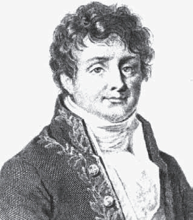
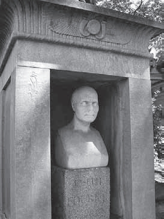
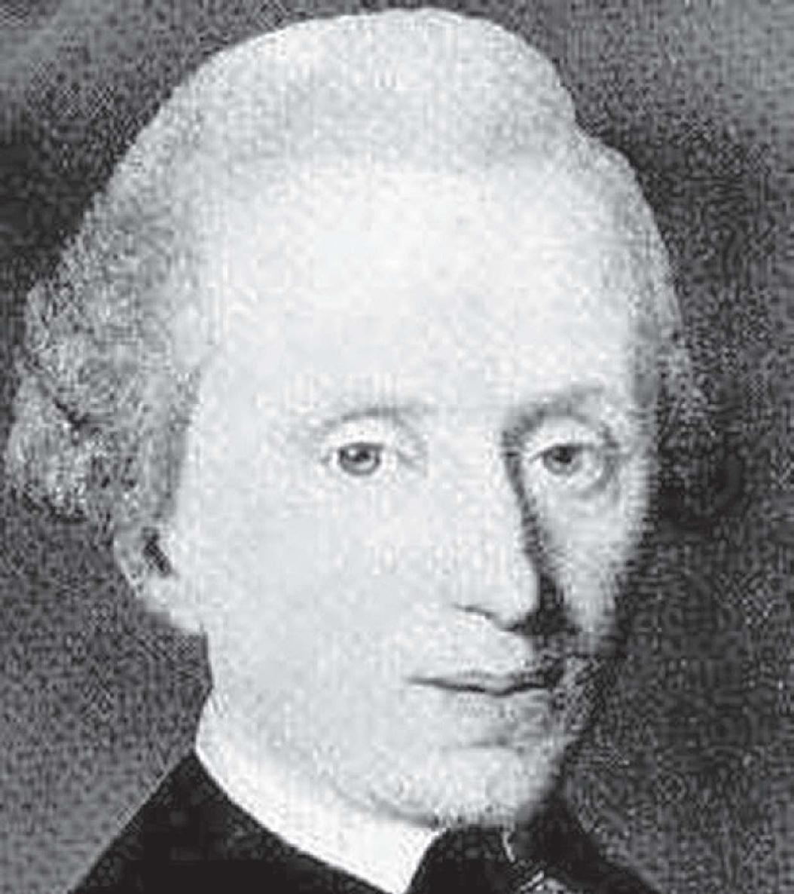

数学本身的发展遵循这样一个规律，即它不时地需要其他养料，这其中尤以物理学给予的养分最多（当然反过来物理学也从数学中受益最多）。可以说，物理问题极大地推动了数学的发展，特别是分析（19世纪后期以来可能要数几何），从微积分学诞生的那一刻起，分析便与力学紧密地联系在一起。正因为如此，才有拉格朗日的巨著《分析力学》。不过，伟大的拉格朗日最满意的数学分支可能是数论，他不无得意地证明每一个正整数均可以表示成不超过4个平方数之和。无论如何，法国大革命所产生的军事、工程技术的需求也为数学的发展和应用打开了方便之门，直到今天这扇门也没有关闭。
必须指出，在牛顿和莱布尼茨之后，以及拉格朗日出现之前，欧洲的大数学家主要集中在经济、文化、科学都不发达的一个高山小国——瑞士。那里有大名鼎鼎的伯努利家族和欧拉，而且他们来自同一座城市——巴塞尔，这是一个非常有意思的现象。第一代伯努利兄弟雅各布和约翰都是欧拉的老师，他们执教于巴塞尔大学。虽然欧拉从这所大学毕业以后一直生活在两个遥远的异国城市——彼得堡和柏林，他的肖像却出现在瑞士法郎纸币上，与英镑纸币上的牛顿、挪威克朗纸币上的阿贝尔一起，成为至今仍在流通的欧洲货币上仅存的三位数学家。值得一提的是，欧拉在欧洲崭露头角是在法兰西科学院主办的有奖征文竞赛上，他一生中共12次赢得该奖项的一等奖。
作为新型大学的开端，巴黎综合理工学院的建立为数学家，尤其是应用数学家提供了许多可靠的职位，拉格朗日和蒙日等成为首批担任大学教授的数学家。青年学生为被学校录取而展开激烈的竞争（甚至设置了面试主考官），他们入学后的培养目标是成为工程师或军官，柯西是其中最出色的一个。他有着十分深厚的学术修为，却由于心胸不够宽广且自负，因此忽视了包括阿贝尔在内的年轻人。这种优良传统后来也传播到世界各地，例如，在新大陆创立了麻省理工学院和加州理工学院，在中国和印度则出现了清华大学和印度理工学院（7个校区分布在印度不同的城市）。

数学家兼埃及学者傅里叶

傅里叶之墓，巴黎拉雪兹
在柯西之前，还有两位法国数学家傅里叶（J.Fourier，1768—1830）和泊松（S.D.Poisson，1781—1840）出自巴黎综合理工学院。傅里叶最伟大的著作是《热的解析理论》（1822），麦克斯韦称赞其为“一首伟大的诗”。在这本书中，他证明了任何函数均可表示成多重的正弦或余弦级数。这些三角级数（又称傅里叶级数）不仅对受边界约束的偏微分方程十分重要，也拓展了函数概念。村长的儿子泊松是“第一个沿着复平面上的路径进行积分的人”，他的名字在大学数学里频频出现，例如，泊松积分和泊松方程（势论），泊松系数（弹性力学），泊松分布定理或泊松大数定律（概率论），泊松括号（微分方程），等等。
傅里叶有句名言：“对自然的深入研究是数学发现最重要的源泉。”他和泊松都有不少有趣的传闻。据说傅里叶出任下埃及总督期间，为了研究热力学，在沙漠里穿上厚厚的衣服，以致加重了心脏病。当他63岁在巴黎去世时，浑身热得像煮熟了似的。泊松小时候由保姆照顾，有一天父亲来看他，发现保姆不在，而他的儿子坐在一个挂在墙上的布袋里。保姆后来对泊松的父亲解释说，这样做可以避免泊松被地板弄脏并染病。泊松晚年的大部分时间都花在摆线问题的研究上，这或许跟他小时候被“挂”在墙上摆来摆去有关。
可以说，18世纪涌现出的数学家人数超过以往任何一个世纪，包括天才辈出的17世纪。可是，18世纪却没有出现一位文艺复兴式的“巨人”，一味务实也导致数学家与哲学家渐行渐远，所以有人称18世纪为“发明的世纪”。事实上，这个世纪几乎没有产生一位数学家兼哲学家或文学家。晚年的欧拉同意拉格朗日的说法，数学的思想快要穷尽了。但是他们并没有想到，这个尽头又是一个崭新的起点。
与此同时，数学所取得的超乎人们想象的成就，以及由此确立的崇高地位，也动摇了长期以来盛行的哲学和宗教思想体系。至少对有识之士来说，对上帝虔诚的信仰已经动摇了，神学家们开始关心一个问题，哲学家们也乘机发出了疑问：真理是如何发现的？关于这个问题，德国哲学家、近代欧洲最具影响力的思想家康德（I.Kant，1724—1804）做了认真研究，他以“直线是两点间的最短距离”为例说明，真理不能仅从经验中得来，而必须是一种综合判断。

哲学家康德，（与费尔马一样）毕生居住在远离文化中心的故乡哥尼斯堡
又如，“二律背反”是指，两个各自依据普遍认可的原则建立起来的、公认为正确的命题之间的矛盾冲突，这是康德哲学中的一个重要概念。他在《纯粹理性批判》里将其描述为4组正题和反题并予以证明，康德称之为“先验理念”的4个冲突。在这4组正反命题中，有两组接近于数学悖论。它们是：
第三组
正题：世界上有出于自由的原因；
反题：没有自由，一切都是依自然法则。
第四组
正题：在世界的原因系列里有某种必然的存在体；
反题：没有必然的东西，在这个系列里，一切都是偶然的。
由此可见，数学真理包括欧氏几何学和悖论，这是康德哲学体系的主要支柱。